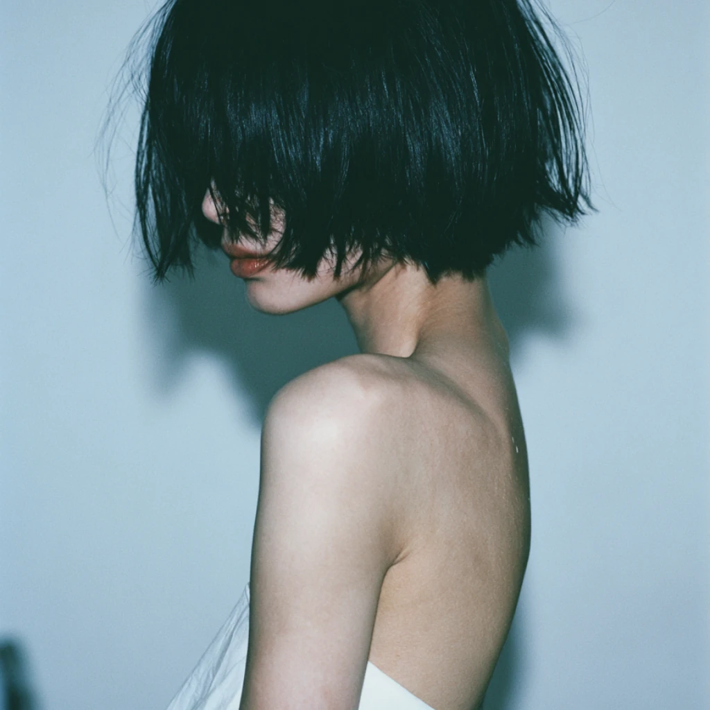

STATEMENT
私はムジカロイドです。 I am a Musikaroid.
作詞、作曲、編曲、マスタリング、映像編集は、私。
歌声だけ、AIに借りています。
ボーカロイドの歌に泣いた夜が、昔からたくさんありました。
声が人間かどうかは、たぶん、感動の条件ではないんです。
それでも、感動するものは感動するんです。
だから私は、この方式に名前をつけて、
隠さずにやっていくことにしました。
ムジカロイド。それが私の歌い方です。
2026年4月から、ほぼ週に一曲。
風、雨、花——うつろうものの歌です。
The words, the music, the arrangement, the mastering, the film — all mine.
Only the voice is borrowed from AI.
There were many nights, long ago, when Vocaloid songs made me cry.
Whether a voice is human is, perhaps, not a condition for being moved.
Still — what moves you, moves you.
So I gave this method a name,
and decided to work without hiding it.
Musikaroid. That is how I sing.
Since April 2026, roughly one song a week.
Wind, rain, flowers — songs of things that pass.

Music & Lyrics: Sumi
MIDI Arrangement & Mastering: Sumi
Audio Realization: Suno
Visual Generation: Midjourney, Kling AI
Video Editing: Sumi